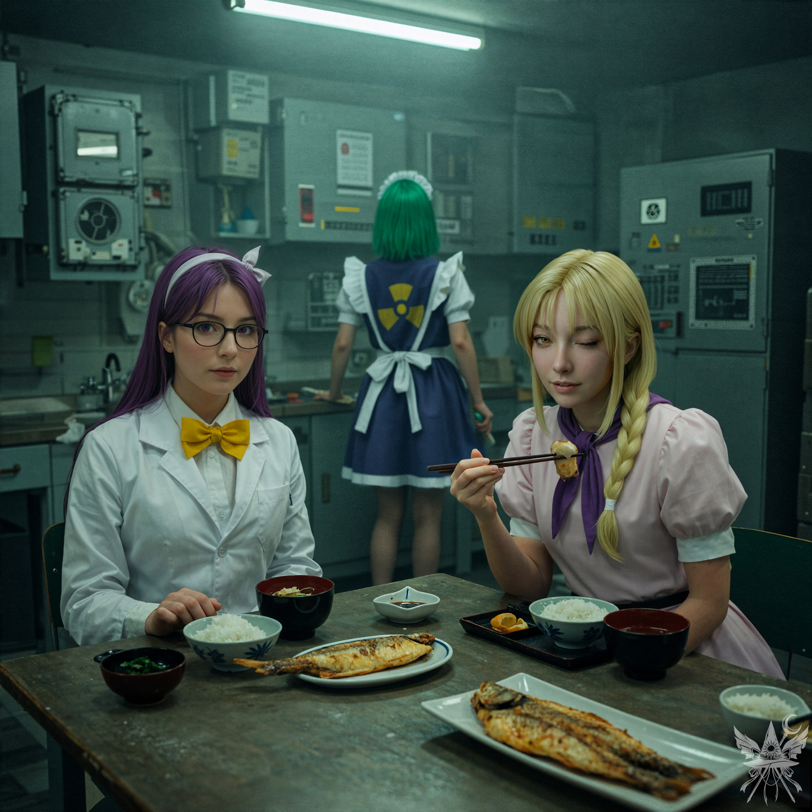

「そういえば、お二人は里香を見かけなかったかしら？ 『すぐ戻る』と言って出て行ったきり、もうずいぶん経つから、少し心配で……」
不意に足を止めた理香子が、不安げな視線を向けてきた。
「申し訳ありません、朝倉さん。実はつい先ほど、表で里香が逮捕されるのを目撃したんです」
（無力だったのは事実だわ。けれど、ここは正直に伝えておいたほうがいいわね）
「逮捕？ 誰に？ 幻想郷に警察なんているはずないのに……」
驚愕に目を見開き、理香子は完全に立ちすくんだ。
「ほら、やっぱりあんなの警察じゃないのよ。ガイドブックにも載っていなかったもの」
ルイズが勝ち誇ったように肩をすくめる。
「私もそれを聞いて驚いたのですが、小兎姫と名乗る警官が、里香を連行していきました」
「小兎姫？ あの……『弾幕の美しさにこだわるお姫様』ぶってる小兎姫のこと！？ 正気とは思えないわ。あのバカ、また調子に乗って！ 今回は何なの？ 一体、どんな罪で里香を連行したっていうの！？」
穏やかだった理香子の声音が、突如として激しい怒りに染まる。
「ええと、たしか『産業スパイ』だと」
「スパイ？ 里香が？ 一体誰の情報を盗むっていうのよ。まさか、河童相手にスパイなんて、ありえないわ！」
苛立ちと共に深いため息をつき、理香子は再び奥へと歩き出した。無機質な廊下を抜けた先には、こぢんまりとしたキッチンスペースが設けられていた。現代的なコンロや冷蔵庫、食器洗い機まで揃っているものの、どれも見慣れない形状をしており、おまけに電力供給のコードが一本も見当たらない。ルイズは興味深そうに、稼働していない食器洗い機をねっとりと観察している。
椅子に腰を下ろした理香子は、苛立ちを持て余すように考え込んでいた。
（里香の安否は気になるけれど……今は、自分の目的を優先させてもらうわ）
怒りの余韻が燻る相手の様子を窺いながら、恐る恐る儀式の話題への足がかりを探る。
「朝倉さん、小兎姫について何かご存じなのですか？」
顔を上げた理香子は、ふっと息を吐いた。
「ずいぶん前の話だけれど、私が小兎姫に初めて会ったのも、この遺跡だったの。その時はまだ、誰もこの場所が何なのか知らなかったのだけれど」
「そうだったのですね。でも、同居人が自宅前で逮捕されたというのに、随分と冷静でいられるのですね。何か事情でも？」
理香子は自嘲気味に苦笑した。
「私もあの牢屋に入れられたことがあるの。というか、この辺りに住んでいる者なら、だいたい一度は経験しているんじゃないかしら。あそこの牢獄は居心地が最悪だけれど、命まで取られることはないから。でも、あの時は里香が助けてくれなかったら、いつまであそこに閉じ込められていたことか……」
「あら。幻想郷の方々は、ずいぶんと簡単に正義を諦めて脱獄なさるのね」
ルイズが皮肉めいた笑みを浮かべて口を挟む。
「正義？ 小兎姫の正義なんて、私たちとは全く違うものよ。理解不能だわ。でも、自分の主張を押し通す力だけは無駄にあるのよね。……あ、いけない。食事の用意をしないと」
「お気遣いありがとうございます。実は、一つお願いがあるのですが……」
本題を切り出す。
「少しばかり、儀式を行いたいのです。この遺跡の環境が条件にぴったりでして。時間は取らせませんから、ここで場所をお借りできないでしょうか」
理香子はゆっくりと首を横に振った。
「ここで魔法の儀式を？ それは里香の許可がないと、少し難しいわね。最近、ここの魔力源が不安定らしいの。下手に呪文を唱えて、大事な設備が壊れてしまっては困るから……」
「それなら、里香を助け出しに行くのはどうでしょう。あの『警察官』が偽者なら、そもそも今回の逮捕自体が違法ですよね？」
苦笑しながら白衣のポケットから小さなリモコンを取り出し、理香子はボタンをいくつか押し込んだ。
「違法かどうかは、小兎姫に聞いてみるといいわ。あの子はいつも『私が法律よ』って言っているんだから」
金属的な摩擦音もなくドアが開き、鮮やかな緑の髪をした小柄なメイドが音もなく入ってきた。こちらを一瞥することもなく、静かに理香子の傍らに控える。
「お呼びでございますか」
柔らかくて、耳に心地よい声だった。
「る～ことちゃん、三人分の食事をお願いできるかしら」
指示を受けると、メイドはすぐにこくりと頷き、ドアの向こうへ消えていった。

剥き出しの蛍光灯が放つ緑がかった冷たい光が、コンクリートの壁や金属のキャビネットを寒々しく照らし出している。オゾンと機械油の人工的な臭いが漂う閉鎖空間の中央で、奇妙な食卓が囲まれていた。テーブルの上に並べられたのは、こんがりと焼けた魚や湯気を立てる味噌汁といった、ごくありふれた和朝食だ。
ひんやりとした無機質な空気と、食欲をそそる香ばしい匂い。ルイズが呆れるほど自然な所作で魚の身を摘み上げる傍らで、理香子は緊張を解かずにじっとこちらを観察している。背後からは、配膳を続けるメイドの微細な駆動音と、肌が粟立つような物騒なエネルギーの気配が絶え間なく伝わってくる。
「それで、どこまで話したかしら」
箸には手をつけず、理香子が視線を向けてきた。
「小兎姫とどうやって出会ったか、というお話でしたね」
「ああ、そうね。それは私が人間の里の近くに住んでいた、数年前のこと。ある日、奇妙なチラシが届いたの。『本日、どんな願いでも叶える〝いにしえの遺跡〟が開店』ってね」
いつの間にか背後に立っていたメイドが、冷徹なまでの正確さで、盆に載った食事を次々とテーブルに並べていく。
「随分と胡散臭い謳い文句ですね。朝倉さんは足を運ばれたのですか？」
「ええ。その時は自分の研究室が喉から手が出るほど欲しかったから。『希望を叶える』という言葉に釣られて、すぐに駆けつけたわ。でも、私だけじゃなかった。夢を叶えたい連中が大勢集まっていて、みんな地下の入り口を目指して弾幕戦を繰り広げていたの。若い頃は兵器をいじるのが趣味だったから、そういうドンパチには慣れっこだったけれど、それでも入り口を抜けるのは骨が折れたわ」
「そこで、小兎姫に会ったと？」
「それどころか、その日は私が勝者になったのよ。でも、小兎姫が先に進んで『報酬』を受け取るのを止めることはできなかった。あの子ったら、有名な巫女を牢獄に入れたのよ。小兎姫の最も厄介なところは、最後まで判決を引き延ばして、戦っている間はわざと自分を愚かなお姫様に見せかけようとするところね。あの猫かぶり、本当に腹が立つわ！」
「巫女を牢獄に？」
「そう、名前は博麗……なんだっけ。その博麗が、遺跡の開店日にる～ことを景品として手に入れたらしいのよ。不思議なことに、二年後、る～ことはここに戻ってきて、私の所有物になったのだけれど」
「霊夢のことかしら？ 博麗霊夢？」
ルイズが食事の手を止め、身を乗り出してきた。
「ご存じなのですか？」
「知っているの？」
メデアと理香子の声が重なる。
「ええ、まあ。以前、少しだけね」
「それで、る～ことが朝倉さんのモノになったというのは、どういう仕組みなのですか」
「ああ、る～ことはロボットなのよ。彼女から発せられる微かな駆動音、それにあの物騒な気配を感じない？」
配膳を終えて静かに遠ざかる背中を見送る。
「本当ですね……。それで、夢を叶える遺跡の秘密とは何だったのですか？」
「いい質問ね。夢を叶えるのは、岡崎夢美という宇宙人。地球外惑星出身の、十八歳の教授なんだそうよ。あちらの技術は地球より五百年も進んでいるから、若くても教授は珍しくないのだとか。夢美ちゃんは助手の北白河ちゆりと一緒に、魔法の実在を証明するために幻想郷に来たのよ」
「魔法を証明する？ る～ことのような高度な機械が存在する文明に、魔法など必要ないのでは？」
「それは私にも謎ね。ただ、夢美ちゃんの星には魔法が存在しないから、強い魔法使いを探していたみたい。捕まえて実験に使うつもりだったようだけれど、私の魔力は強すぎて捕獲できなかったのよ。私も研究者だから、彼女の探求心は理解できたし、騙されたと怒る気にはなれなかったわ。私の気持ちを察してくれたのか、夢美ちゃんは私の願いを叶えてくれたの」
「朝倉さんの願いとは？」
理香子は答える代わりに席を立ち、目立たない本棚へと歩み寄った。雑多に並ぶ背表紙の中から一冊だけを抜き取ると、再びテーブルに戻り、こちらへと差し出す。判読しにくいタイトルを、ルイズが横から覗き込んで高らかに読み上げた。
「『五年の科学』……まさか、小学五年生の理科の教科書？ 冗談でしょう？」
鼻で笑うような響きが混じっている。
「ええ、本当よ。夢美ちゃんは、私が望む知識を与えてくれたの。私が自分の研究室が欲しいと言うと、この遺跡を使わせてくれた。ただ、この本はどうしても理解できなくて……言葉は読めるのだけれど、内容がさっぱりなの。いつか夢美ちゃんたちにまた会えたら、違う学年の教科書も借りようかしら。それで、何かヒントが見つかるかもしれないと思って……」
「ふーん。その宇宙人とやら、なかなか悪趣味ね。それで、里香の救出はいつ決行するおつもり？」
「すぐに行く意味はないわ。今は小兎姫が囚人を厳しく監視している時間だから、夜になってからのほうがいいわね。お二人とも、協力してくださる？」
突如、ルイズが口を挟んだ。
「ちょっと待ってくださる？ メデアさんと二人で話したいことがあるのだけれど……」
「ええ、構わないわ。どうぞ……」
戸惑い気味に頷く理香子を残し、少し離れた場所へと連れ出される。
小声になったルイズが、探るような視線を向けてきた。
「あのね。正直に言うと、あの研究者と手を組むのは気が進まないわ。メデアさんが探しているのはただの観光地じゃなくて、儀式のための強力な魔力源でしょう？ 私、これからちょうどいい別の場所に向かうつもりなの。だから、一緒に来ないかしら？」
「ですが……」
冷めた魚を静かにつつき始めた理香子の背中を見る。
（先ほど、里香が連行されるのを黙って見ていたことが、少し心に引っかかっているわね。儀式の場所を借りるためにも、恩を売っておいて損はないはずだわ）
「先ほどの里香の逮捕、何もできず見過ごしたことが、少し心残りでして」
「あら、何を仰っているの？ 私はあの『里香ちゃん』の保護者じゃないのよ。赤ずきんちゃんだろうが、空飛ぶ不良少女だろうが、助ける義理なんてこれっぽっちもないわ。そんなにお節介を焼きたいのなら、残念だけれど私は一人で行かせてもらうわね。メデアさんも、あんな厄介事からは手を引いたほうが賢明だと思うけれど……どうなさる？」